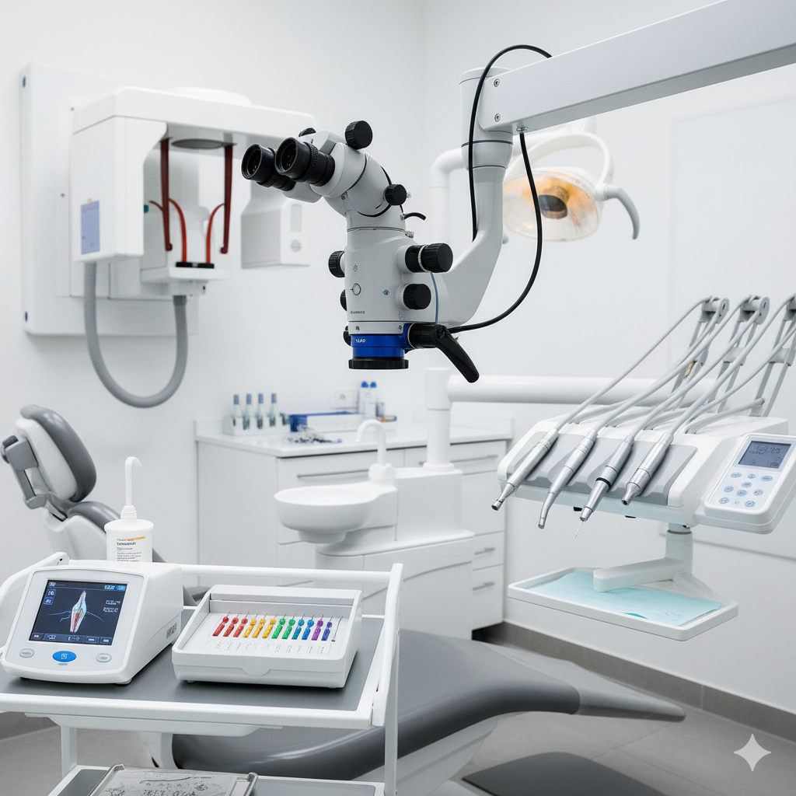
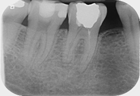
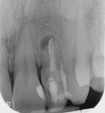
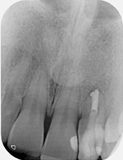
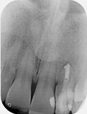
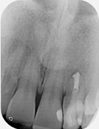

Our Modern Clinic
Take a virtual tour of our modern clinic
Clinical Gallery



⚠
Clinical Content Advisory
The clinical images below are intended for dental professionals to illustrate treatment procedures and outcomes.
Some viewers may find these images disturbing. Caution is advised.
LR6: Root canal retreatment & internal root resorption management and cuspal coverage
UL2: Root canal retreatment of open apex



 


Post removal and endodontic retreatment

12-month review demonstrating healing

Dental trauma management
Pre-operative photo and X-ray


6 month review

Surgical management of external cervical resorption lesion
Pre-op X-ray


Post-op photos and X-ray


Fractured file removal and re-rct

Pre-op

Retrieved file

12 month review
Root canal retreatment and bypass of separated instrument
Pre-op


Molar apicectomy

Pre-op

Removed granulation tissue

Review radiograph demonstrating healing
Internal resorption management


Open/Immature apex management and internal whitening
Pre-op


Post-op


Post-op photos

Multi-disciplinary: root canal treatment, molar apicectomy and bone regeneration
Pre-operative X-ray


Post-operative X-ray
Molar endodontics
Pre-operative


Post-operative